Até 16 pessoas, sem limite de tempo.
Vídeo, voz e tela vão direto para quem está na sala. Quem fala acende, e você vê na hora quem está com a palavra.
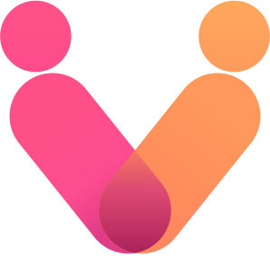
Vcall BaixarChamada de vídeo de um computador para o outro, criptografada. Sem conta, sem mensalidade, sem ninguém no meio.
Vídeo, voz e tela vão direto para quem está na sala. Quem fala acende, e você vê na hora quem está com a palavra.
Rabisque, cole imagens em camadas e anote por cima da tela que alguém está mostrando.
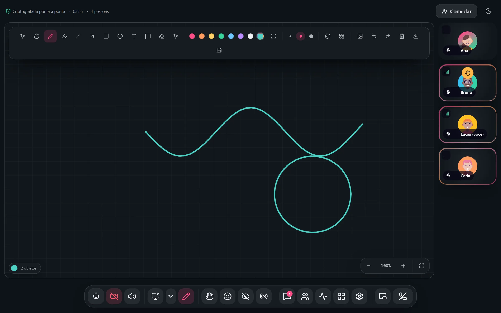
Fotos e arquivos vão direto para quem está na chamada, e a conversa não fica guardada em lugar nenhum.
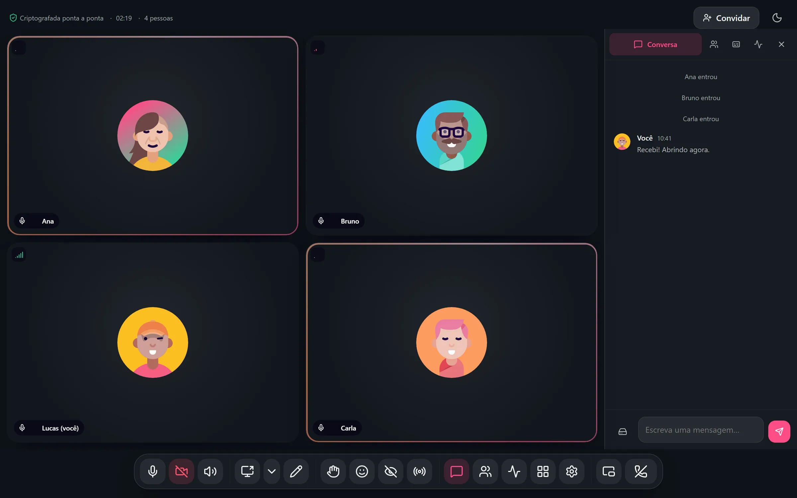
Aperte J e a chamada vira uma janelinha no canto, com quem fala e os botões que importam.
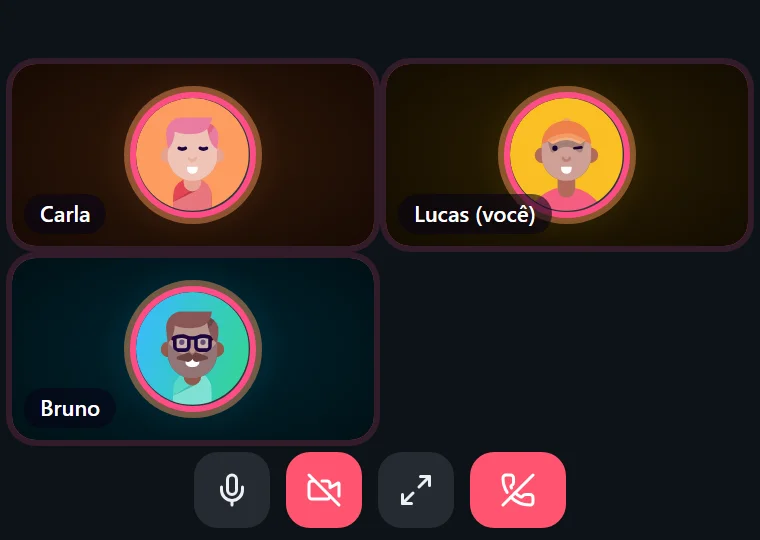
Tinta, Ametista, Carvão, Oceano e Brasa. Em todas, o texto passa no teste de contraste.
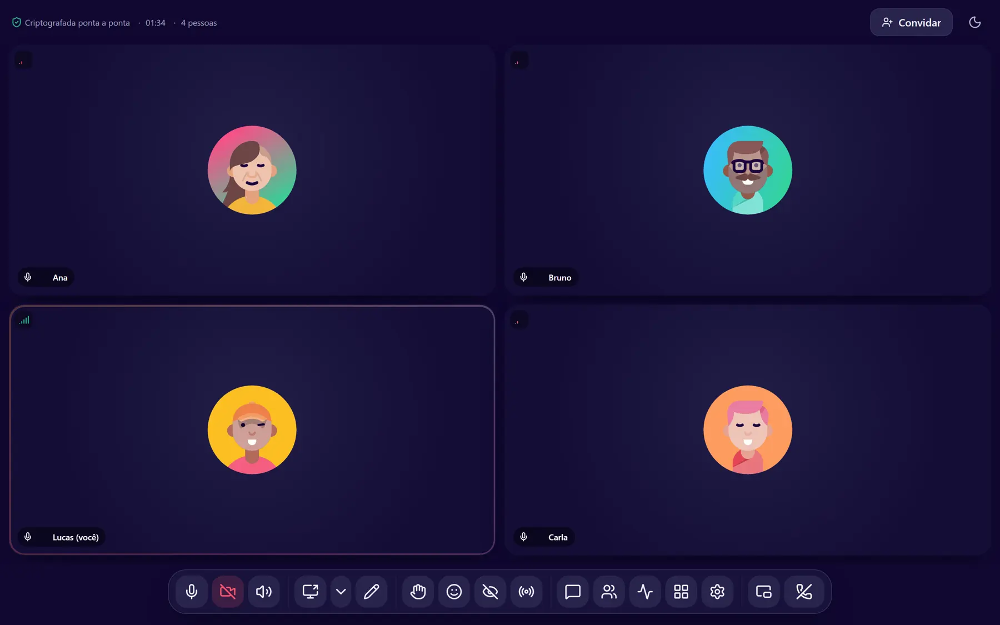
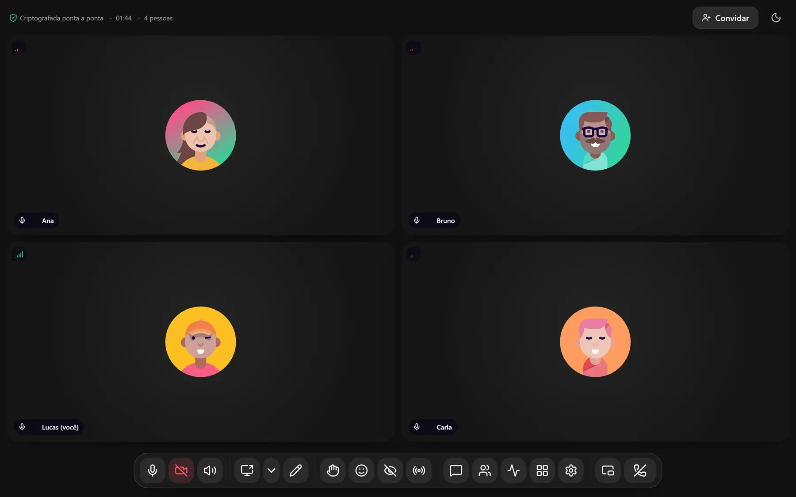
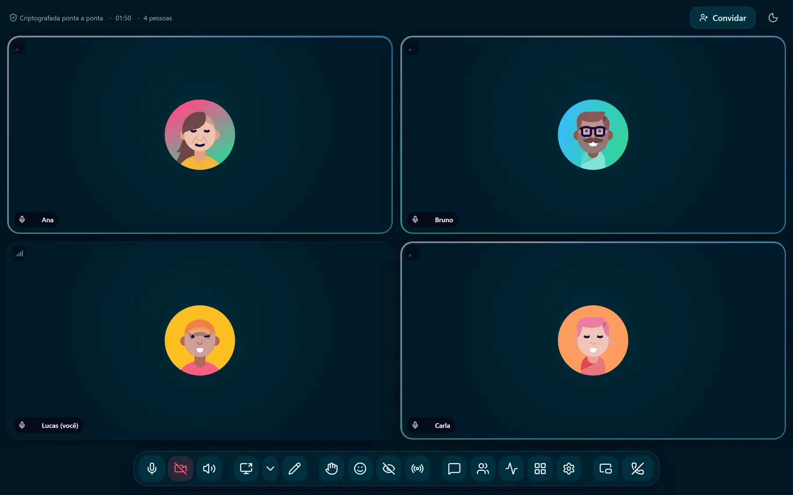
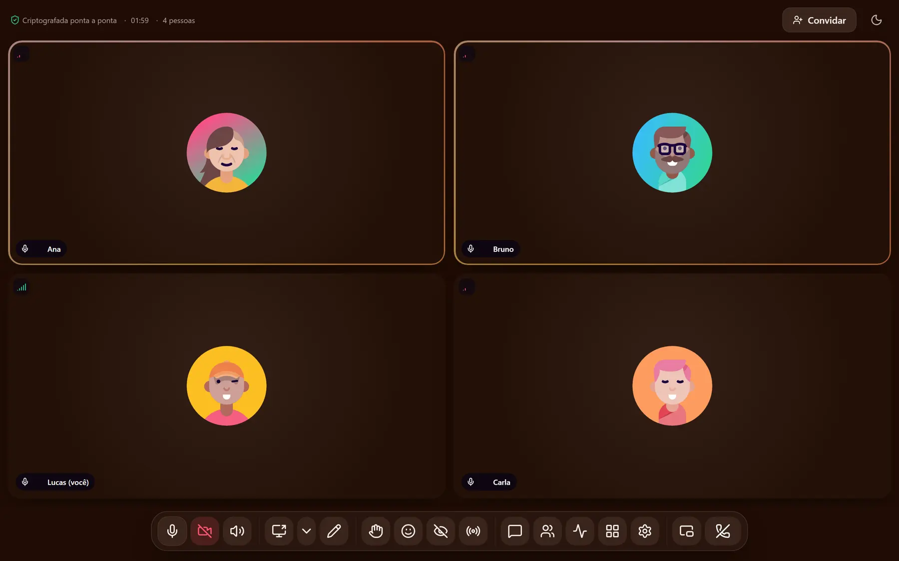
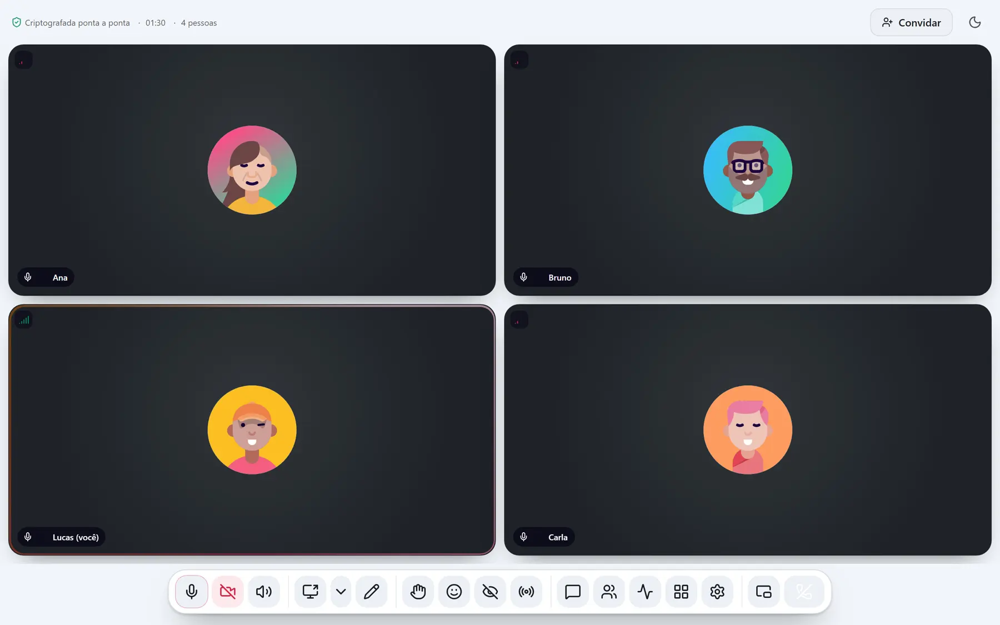
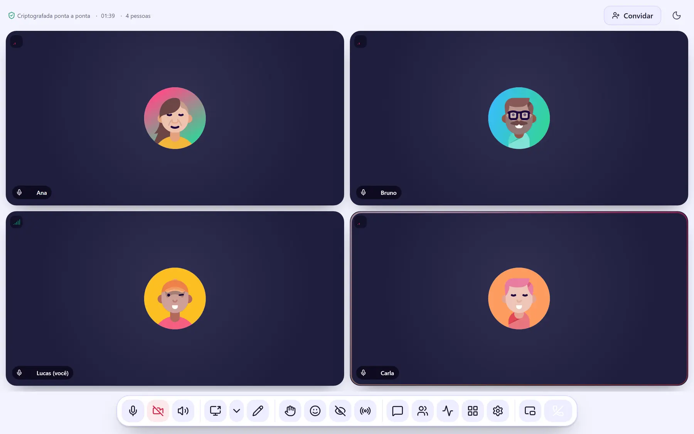
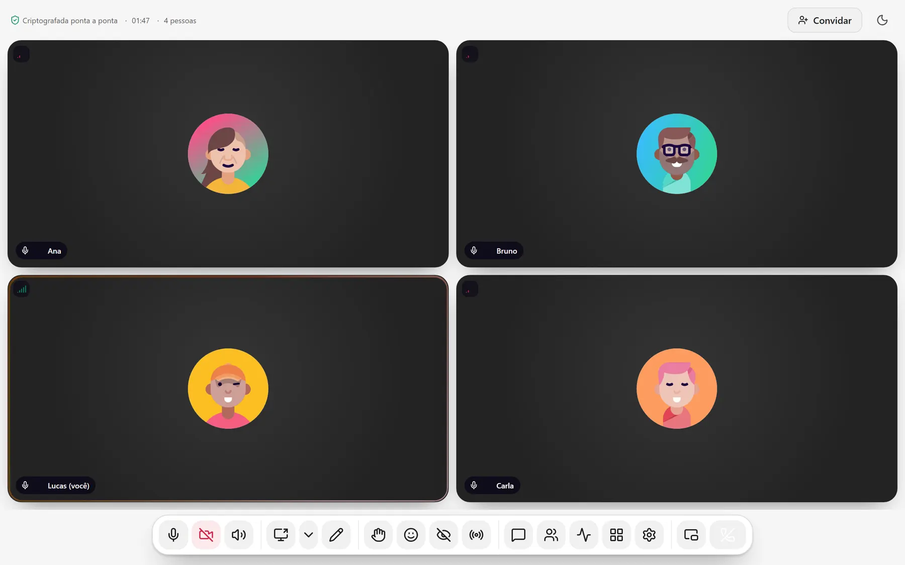
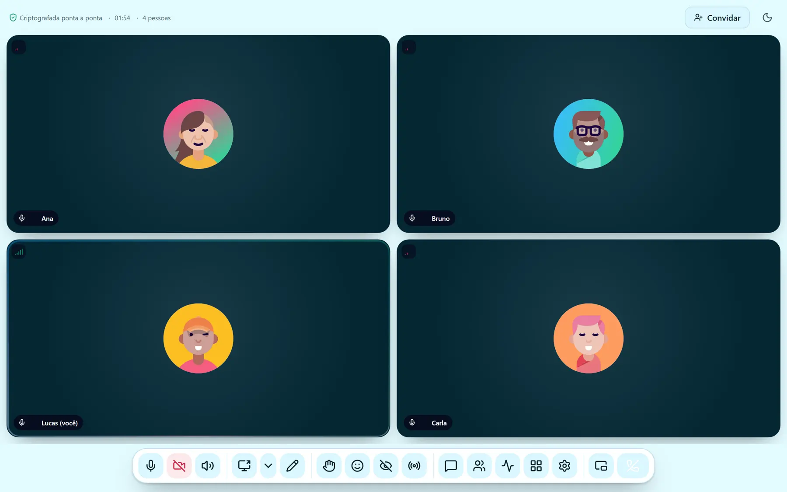
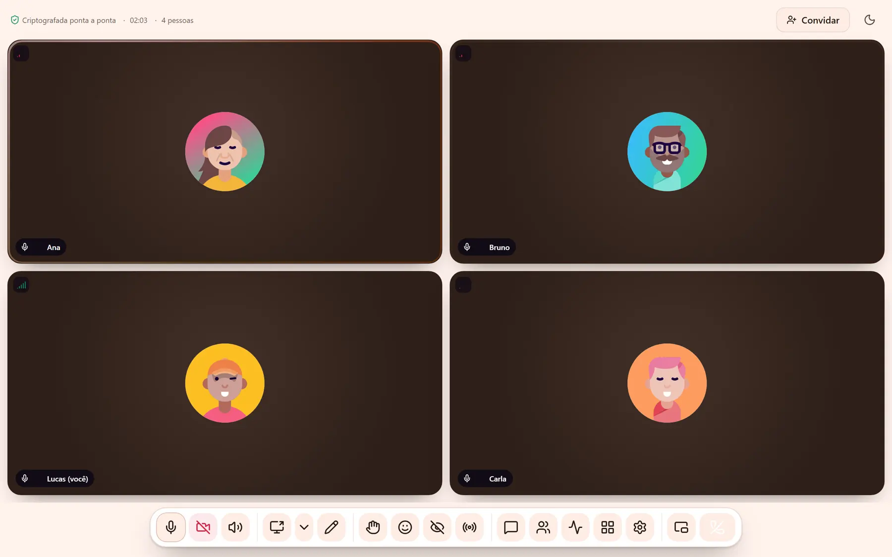
Sem conta.
Sem mensalidade.
Sem limite de tempo.
Sem gravação na nuvem.
Só quem você chamou.
O reconhecimento de fala roda na sua máquina. Dá para buscar na transcrição e baixar em .srt.
Sala de espera, silenciar todos, trancar a sala e fila de mãos levantadas.
O áudio viaja com uma cópia de reserva: se um pedaço se perde, o seguinte cobre.
Se a ligação direta entre duas pessoas falha, um terceiro computador da chamada faz a ponte.
Mande pelo WhatsApp. Quem não tem o Vcall entra pelo navegador, sem instalar e sem criar conta.
Ventilador, teclado e liquidificador ficam do lado de fora.
Chame alguém de fora da sua rede com um link na hora. Fechou a janela, o link morre.
16 jogos prontos. Escolha um e todo mundo na sala recebe o convite para jogar.
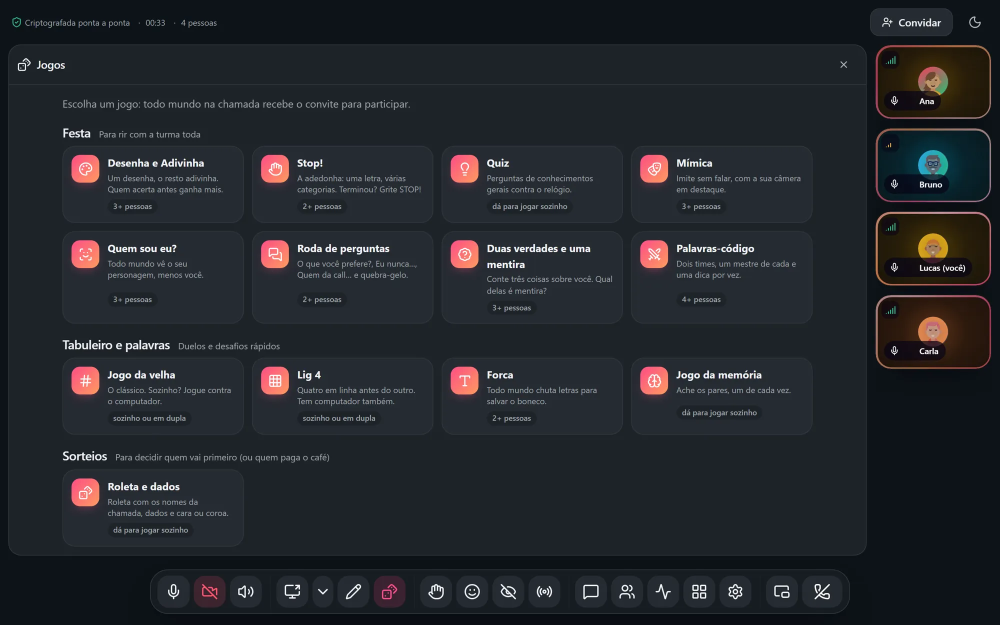
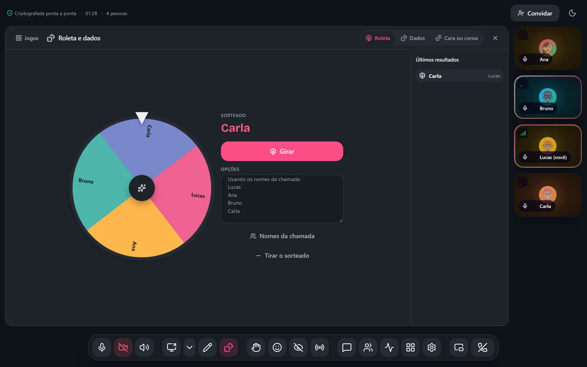
Grátis para Windows, Linux e Android. Quem você convidar entra pelo navegador.
Versão 3.15.0. O que mudou
Windows 10 e 11. Instala em um clique e se atualiza sozinho.
Baixar .exe 138 MBUbuntu, Fedora, Arch e qualquer outra distribuição.
Baixar AppImage 159 MBEntre e crie chamadas pelo celular.
Baixar APK 0,2 MBEnquanto isso, quem está no Mac entra nas chamadas pelo navegador.
Em breve